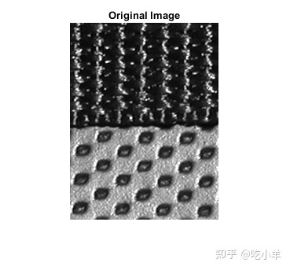
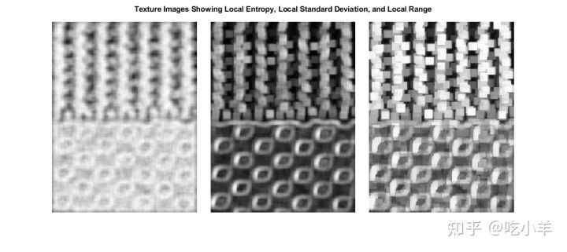
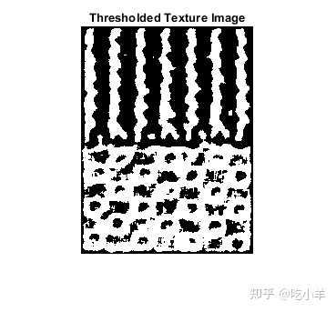
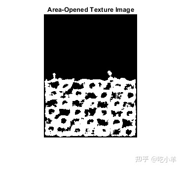
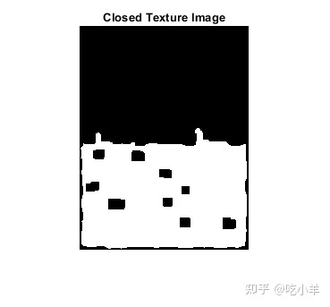
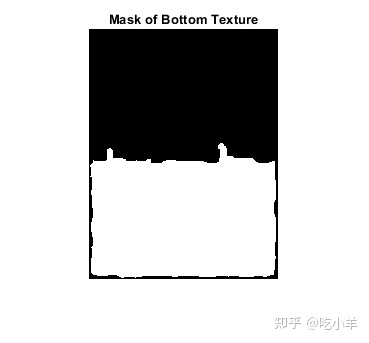
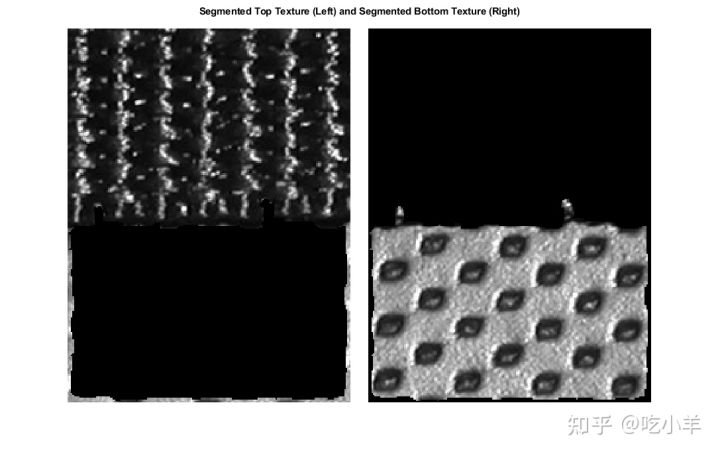
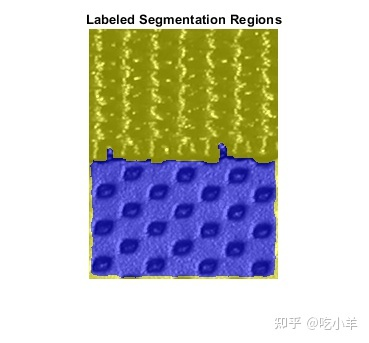
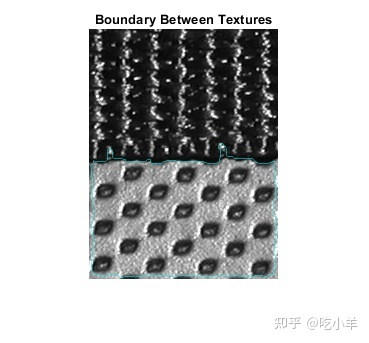

Home
本示例展示了如何根据纹理识别和分割区域。
读取图像
读取并显示袋子上纹理图案的灰度图像。
I = imread('bag.png');
imshow(I)
title('Original Image')

创建纹理图像
使用entropyfilt创建一个纹理图像。函数entropyfilt返回一个数组，其中每个输出像素包含输入图像I中相应像素周围 9×9 邻域的熵值。熵是随机性的统计量度。
还可以使用stdfilt和rangefilt来实现类似的分割结果。为了与局部熵的纹理图像进行比较，创建纹理图像S和R，分别显示局部标准偏差和局部范围。
E = entropyfilt(I); S = stdfilt(I,ones(9)); R = rangefilt(I,ones(9));
利用rescale重新缩放纹理图像E和S，使得像素值在范围[0，1]，成为预期的图像数据double类型。
Eim = rescale(E); Sim = rescale(S);
在蒙太奇中显示三个纹理图像。
montage({Eim,Sim,R},'Size',[1 3],'BackgroundColor','w',"BorderSize",20)
title('Texture Images Showing Local Entropy, Local Standard Deviation, and Local Range')

为底部纹理创建蒙版
这个例子继续处理熵纹理图像Eim。可以对其他两种纹理图像使用形态学函数重复类似的过程，以获得类似的分割结果。 对重新缩放的图像Eim设置阈值以分割纹理。选择 0.8 的阈值，是因为它大致是沿纹理边界的像素强度值。
BW1 = imbinarize(Eim,0.8);
imshow(BW1)
title('Thresholded Texture Image')

二值图像BW1中的分割对象是白色的。如果比较BW1和I，可以注意到顶部纹理过度分割（多个白色物体），底部的纹理几乎整体分割了。使用bwareaopen删除顶部纹理中的对象。
BWao = bwareaopen(BW1,2000);
imshow(BWao)
title('Area-Opened Texture Image')

使用imclose平滑边缘，并在BWao的对象中关闭所有开放的洞。使用与entropyfilt一样的 9×9 邻域。
nhood = ones(9);
closeBWao = imclose(BWao,nhood);
imshow(closeBWao)
title('Closed Texture Image')

使用imfill填充closeBWao上对象的空洞。底部纹理的蒙版并不完美，因为蒙版没有延伸到图像的底部。但是，可以使用蒙版来分割纹理。
mask = imfill(closeBWao,'holes');
imshow(mask);
title('Mask of Bottom Texture')

使用蒙版分割纹理
将纹理分成两个不同的图像。
textureTop = I;
textureTop(mask) = 0;
textureBottom = I;
textureBottom(~mask) = 0;
montage({textureTop,textureBottom},'Size',[1 2],'BackgroundColor','w',"BorderSize",20)
title('Segmented Top Texture (Left) and Segmented Bottom Texture (Right)')

显示分割结果
创建一个标签矩阵，其中蒙版为false的标签为1，蒙版为 true的标签为2。在原始图像上叠加标签矩阵。
L = mask+1;
imshow(labeloverlay(I,L))
title('Labeled Segmentation Regions')

用青色勾勒出两个纹理之间的边界。
boundary = bwperim(mask);
imshow(labeloverlay(I,boundary,"Colormap",[0 1 1]))
title('Boundary Between Textures')

======================================================================
我的测试结果及程序
下面是我测试的代码：

注：本文根据MATLAB官网内容修改而成。